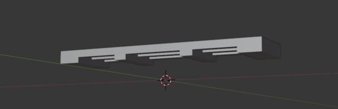

Intro
The rails were the first part that I had ever made, even when I was still following the idea of making a game.I tried to put in some detail, but there wasn't that much I could do... as they are just rails
And when I transitioned from making a game, to making a 3D printable model, I didn't really need to change anything, the small details that were left out, actually didn't matter that much.
Detail scale
At the right rail in the preview image, you can see those little nobs where the rail is connected to its base. Those were always there, and were never changed.Because when I print them, they come out fairly well, and if not, it doesn't matter cause they arent in the way of anything.
And while there isn't much to "copy", I still tried to make them as close as I can to the real ones, while still being fully functional for what I need.
Scaling
Rails here in germany have a guage of about 1.435 meters, and mine have 10.2cmI remember that I used some calculation for the train scale at least, to get it to be roughly the same on a certain scale, but I dont fully remember that anymore honestly.
And whenever I look at them when printed, I believe they turned out very well on that scale
Straights
Making the straight rail was of course the first and easiest part to makeAnd to connect them, I made several different "clippers", that I can clip on 2 rails, so that I won't need to glue them together.
They can be quite annoying sometimes to make, when the scale is off by some milimeters, but they mostly fit perfectly.
They easily just clip onto the two rails on one base each and pull them together.
